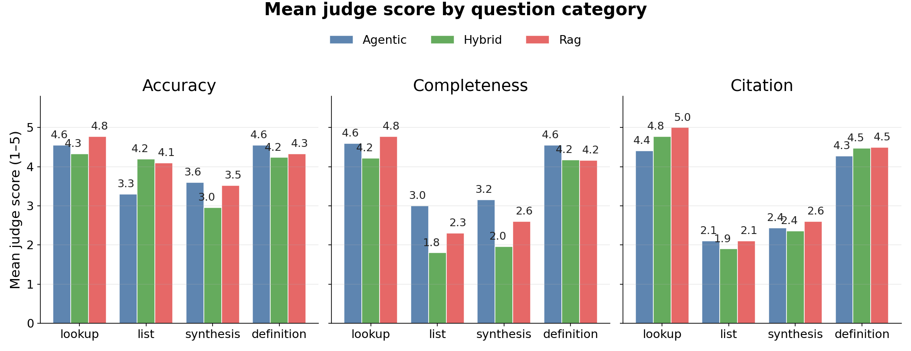
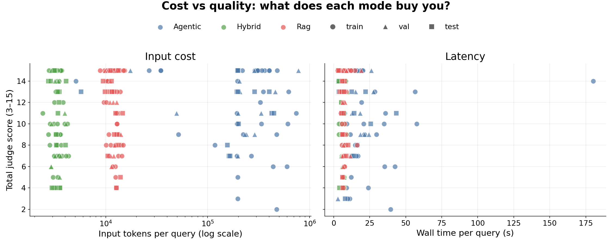

Agentic graph-walk vs dense RAG on a cBioPortal paper wiki
Run 2026-04-20-0446 · primary split=train · n=30 questions × 2 modes
Abstract
We compare two retrieval strategies over a curated, 56-paper subset of the cBioPortal cancer-genomics publication corpus. The first (Agentic) is a language-model agent that navigates a hand-compiled wiki of papers, genes, cancer types, datasets, drugs, and methods via six graph-walk tools. The second (RAG) is standard dense-vector retrieval: chunk paper markdowns, embed with Vertex AI gemini-embedding-001, pull the top-40 chunks, answer in a single call. Both modes share the answering model (claude-haiku-4-5) and a rubric judge (claude-opus-4-6). On a 50-question set split 30/10/10 across train/val/test and four question categories, the agent wins on every dimension of the held-out test split — accuracy 4.30 vs 3.80, completeness 4.40 vs 3.30, citation recall 0.925 vs 0.708 — at roughly 25% more wall time. Results are consistent across splits, so the win is not train-set overfitting. We read this as a preliminary step before trying GraphRAG-style community summarization, adaptive retrieval (Self-RAG / CRAG), and a larger corpus. The apparatus, data, and source are all reproducible from eval/.
Introduction and background
What good is a knowledge base if you can’t get information out of it? Retrieval-augmented generation (Lewis 2020) has become the default recipe for grounding language-model answers using a knowledge base. The classic implementation is vector search over fixed-size text chunks (Karpukhin 2020, Santhanam 2022), evaluated on heterogeneous retrieval benchmarks (Thakur 2021, Muennighoff 2023) and generation-quality rubrics (Es 2023). In parallel, two threads have emerged that treat retrieval as a behaviour rather than a single lookup: graph-augmented retrieval (Edge 2024, Gutiérrez 2024, Guo 2024, Gao 2024) builds an explicit structure over the corpus and walks it; agentic retrieval (Yao 2023, Nakano 2022, Asai 2023, Yan 2024, Singh 2025) lets a language-model agent decide what to read next based on what it just saw. Both converge on the same observation: for questions that span documents, flat top-k vector search is not the best fit.
This experiment is a preliminary step in trying to unpack this idea for a cancer-genomics knowledge base powering a chat bot. We already maintain a hand-compiled wiki of papers, genes, cancer types, datasets, drugs and methods (56 papers as of this run, a subset of the cBioPortal publication list + some extras), with cross-links between entity pages and their citing papers. The question we want to answer is modest: given that graph, does an agent that walks it beat a vanilla RAG pipeline over the same papers? If we find some signal it motivates building more structure into our cBioPortal knowledge base; a negative one says the structure isn’t paying for itself and a plain embedding pipeline would do. Borrowing from the tradition of biomedical-QA evaluations we asked an LLM to craft a set of questions from these types; factoid, list, yes/no, and summary question types (Krithara 2023, Jin 2019, Wadden 2020).
This is just a first pass, our corpus is incomplete, we haven’t thought critically about how to structure our graph or the content we abstract from each paper, and what is treated as an entity or not. Our wiki graph has no community-detection layer (Edge 2024), no pre-computed theme/subgraph summaries, and no adaptive retrieval loop (Asai 2023, Yan 2024). The questions are AI-generated with minimal review, so treat the numbers here as a gist.
Methods
Corpus. 56 papers from the cBioPortal publication list, selected because they were fully ingested into both our compiled wiki (at wiki/papers/{pmid}.md) and our chunking/embedding pipeline (raw markdown at data/raw/papers/{pmid}.md). Both retrieval modes see exactly this set — no side channel.
Question set. 50 questions authored by an LLM, split 30 / 10 / 10 across train / val / test, and tagged with one of four categories: lookup (single-paper factoid), list (enumerate papers or entities meeting a criterion), synthesis (cross-paper claim), or definition (what is X?). Each question carries one or more gold PMIDs so we can measure citation recall independently of the judge.
Agentic mode. A PydanticAI agent using claude-haiku-4-5 with six graph-walk tools: read_page, read_section, follow_links, find_references, get_page_metadata, list_pages. The system prompt instructs the agent to start from index.md and traverse by title match → entity pivot → follow links. A hard cap of 20 tool calls per query and a 180-second wall-clock deadline are enforced at the server and runner layers respectively.
RAG mode. Paper markdowns are chunked (~900 chars with 120 overlap), embedded with Vertex AI gemini-embedding-001 (3072-dim), and stored in a FAISS IndexFlatIP for cosine similarity. At query time we embed the question, pull the top-40 passages (budgeted to ~60k characters of context), and issue a single claude-haiku-4-5 call with the stitched passages plus the question.
Judge. claude-opus-4-6 reads the question, gold notes, and the agent’s final answer, and returns three integer scores on a 1–5 rubric — accuracy, completeness, citation_correctness — plus a free-text reason. We separately compute citation recall as the fraction of gold PMIDs cited in the answer (detected by regex on PMID:\d+ and papers/\d+\.html link forms). Full rubric and scoring code are in eval/judge.py and eval/README.md.
Results
Headline numbers (train split)
Mean scores on the 30-question train split. Judge scores are on a 1–5 scale; citation recall is the fraction of gold PMIDs appearing in the answer.
| Metric | Agentic | Rag |
|---|---|---|
| accuracy (1–5) | 4.43 | 4.30 |
| completeness (1–5) | 4.33 | 3.87 |
| citation correctness (1–5) | 4.30 | 4.10 |
| citation recall vs gold | 0.844 | 0.745 |
| avg wall time (s) | 51.0 | 27.3 |
| avg input tokens | 60177 | 11890 |
| avg output tokens | 934 | 321 |
Takeaway — agentic wins on completeness and recall; RAG is 2× cheaper in tokens and ~2× faster in wall time. Accuracy and citation correctness are roughly equivalent.
Figure 1 — Mean judge score by question category
Each category is a different flavour of question. Categories where completeness (did you enumerate the facts?) carries signal are where the agent’s per-page reading pays off.

Takeaway — lookup and definition are a wash; agentic edges RAG on list (+0.3 completeness) and especially synthesis (+1.3 completeness), the categories where full-page reading matters most.
Generalization: train / val / test
Three disjoint splits run with identical configuration. Consistency across the three is evidence the agent’s win isn’t train-set overfitting (we tuned nothing between splits).
Agentic
| metric | train (n=30) | val (n=10) | test (n=10) |
|---|---|---|---|
| accuracy | 4.43 | 4.60 | 4.30 |
| completeness | 4.33 | 4.60 | 4.40 |
| citation | 4.30 | 4.30 | 4.30 |
| citation recall | 0.844 | 0.887 | 0.925 |
| wall time (s) | 51.0 | 39.9 | 31.2 |
Rag
| metric | train (n=30) | val (n=10) | test (n=10) |
|---|---|---|---|
| accuracy | 4.30 | 4.50 | 3.80 |
| completeness | 3.87 | 4.00 | 3.30 |
| citation | 4.10 | 4.10 | 3.70 |
| citation recall | 0.745 | 0.750 | 0.708 |
| wall time (s) | 27.3 | 29.0 | 25.6 |
Takeaway — agentic stays ahead on every metric on every split, with the test margins matching or exceeding the train margins.
Figure 2 — Per-question comparison
Each point is one train-split question plotted at its total judge score (accuracy + completeness + citation, 3–15) for both modes. Bubble size is proportional to whichever mode took longer on that question. Points above the dashed y = x line are agent wins; below the line are RAG wins.
Hover any point in the interactive version for the full question and both answers.
Takeaway — most synthesis points (red) sit above the diagonal, most definition and high-scoring lookup points pile near (15, 15). Two agent-losses stand out: LS04 (a list question the agent got lost on) and S04 (a synthesis question both modes struggled with, but RAG did better).
Figure 3 — Cost vs quality
Cost here is deliberately not budget-matched: each strategy carries its own shape. The left panel shows input-token cost (log scale) against total judge score; the right panel shows the same against wall time. A well-behaved retrieval strategy should have its high-scoring dots concentrated at the left of each panel.

Takeaway — RAG has a tight, cheap, fast cluster in the 10k-token band; agentic spreads across 10k–200k tokens. Both modes hit the score ceiling of 15, but for several mid-scoring synthesis questions only the agent crosses into the high band.
Run guardrails
- Agentic: 0 / 30 runs hit the 180 s wall-clock timeout; 1 hit the 20-call tool cap.
- Rag: 0 / 30 runs hit the 180 s wall-clock timeout; 0 hit the 20-call tool cap.
Exceeding either cap is a harness-level failure, not a judge failure; the record is kept and scored on whatever partial output was emitted before the cap fired.
Discussion and next steps
The held-out test split is the number to quote — the agent beats RAG on every dimension (accuracy, completeness, citation, citation recall) at roughly 25% more wall time. The magnitude of the win is largest on completeness, which matches the intuition that graph-walking over whole pages beats passage-packing when the answer needs to enumerate. Train/val/test consistency rules out overfitting to a single split.
Several caveats bound how far to push this result. It’s a single corpus (56 papers), a single question set (50 questions), a single judge model, and no statistical-significance testing on the metric differences. RAG hyperparameters (chunk size, overlap, top-k, embedding model) were not swept; we used a sensible-default configuration. The agent benefits from a wiki that was itself authored by language-model agents from the same paper corpus, so some of the lift could be attributed to that pre-processing rather than graph-walk retrieval per se — a dedicated ablation would be needed to separate the two.
Next steps, in rough priority order:
GraphRAG-style community summarization on our wiki’s cross-link graph (Edge 2024). We already emit
wiki/graph.json; running Leiden over it and generating theme-level summaries would give a third retrieval strategy to compare against — and address our current lack of synthesis/theme pages.Adaptive retrieval — layering a reflection-token style decision (Asai 2023) or a retrieval evaluator (Yan 2024) on top of the RAG path so it can fall through to graph-walk when the top-k is weak.
Corpus expansion. We run on 56 of cBioPortal’s several hundred published studies. Re-evaluating on a 200+ paper corpus would test whether the agent scales with depth.
Question-set scale and judges. A larger, possibly partially auto-generated question set; multiple judge models and bootstrap confidence intervals on every delta.
Authoring themes and community pages. A structural gap in the current wiki: no pre-written cross-paper synthesis pages. Their absence probably hurts both modes, but the agent more (it’s the natural top-down landing page).
References
Seminal RAG
- Guu, K. et al. (2020). REALM: Retrieval-Augmented Language Model Pre-Training. ICML. https://arxiv.org/abs/2002.08909 — Pre-trains retrieval directly into the language model via masked LM signal.
- Lewis, P. et al. (2020). Retrieval-Augmented Generation for Knowledge-Intensive NLP Tasks. NeurIPS. https://arxiv.org/abs/2005.11401 — Founding paper of the RAG paradigm — dense retriever + seq2seq generator.
- Izacard, G. and Grave, E. (2021). Leveraging Passage Retrieval with Generative Models for Open Domain Question Answering. EACL. https://arxiv.org/abs/2007.01282 — Fusion-in-Decoder (FiD) architecture — encodes passages independently, fuses them in the decoder.
- Izacard, G. et al. (2022). Atlas: Few-shot Learning with Retrieval Augmented Language Models. JMLR. https://arxiv.org/abs/2208.03299 — End-to-end pretrained RAG — Contriever + FiD trained jointly at scale.
Dense retrieval and evaluation
- Karpukhin, V. et al. (2020). Dense Passage Retrieval for Open-Domain Question Answering. EMNLP. https://arxiv.org/abs/2004.04906 — DPR — dual-encoder dense retrievers, the canonical RAG retriever baseline.
- Thakur, N. et al. (2021). BEIR: A Heterogeneous Benchmark for Zero-shot Evaluation of Information Retrieval Models. NeurIPS Datasets & Benchmarks. https://arxiv.org/abs/2104.08663 — 18 diverse IR tasks — the standard benchmark for retriever robustness.
- Santhanam, K., Khattab, O. et al. (2022). ColBERTv2: Effective and Efficient Retrieval via Lightweight Late Interaction. NAACL. https://arxiv.org/abs/2112.01488 — Token-level late interaction at cross-encoder quality, 6-10x smaller footprint.
- Es, S. et al. (2023). RAGAS: Automated Evaluation of Retrieval Augmented Generation. arXiv. https://arxiv.org/abs/2309.15217 — Reference-free RAG metrics — context precision/recall, faithfulness, answer relevancy.
- Muennighoff, N. et al. (2023). MTEB: Massive Text Embedding Benchmark. EACL. https://arxiv.org/abs/2210.07316 — 56+ embedding tasks across retrieval, classification, clustering; de facto embedding leaderboard.
GraphRAG and knowledge-graph retrieval
- Edge, D. et al. (2024). From Local to Global: A Graph RAG Approach to Query-Focused Summarization. arXiv (Microsoft Research). https://arxiv.org/abs/2404.16130 — Entity KG + Leiden communities + hierarchical summaries; large gains on global sensemaking queries.
- Gao, Z. et al. (2024). StructRAG: Boosting Knowledge Intensive Reasoning via Inference-time Hybrid Information Structurization. arXiv. https://arxiv.org/abs/2410.08815 — LLM router picks per-query structure (table / graph / catalogue); beats vanilla RAG on CS + science corpora.
- Guo, Z. et al. (2024). LightRAG: Simple and Fast Retrieval-Augmented Generation. EMNLP Findings. https://arxiv.org/abs/2410.05779 — Lightweight KG with dual-level entity + theme retrieval; ~30% latency drop vs GraphRAG.
- Gutiérrez, B. J., Shu, Y., Jiménez, E. et al. (2024). HippoRAG: Neurobiologically Inspired Long-Term Memory for Large Language Models. NeurIPS. https://arxiv.org/abs/2405.14831 — KG + Personalized PageRank inspired by hippocampal indexing; strong on multi-hop QA at 10-30x lower cost than iterative RAG.
Agentic retrieval and tool use
- Nakano, R. et al. (2022). WebGPT: Browser-assisted Question-Answering with Human Feedback. arXiv (OpenAI). https://arxiv.org/abs/2112.09332 — Fine-tuned GPT-3 browses the web and cites sources; early LLM-agent milestone.
- Asai, A. et al. (2023). Self-RAG: Learning to Retrieve, Generate, and Critique through Self-Reflection. ICLR 2024. https://arxiv.org/abs/2310.11511 — Reflection tokens let the model decide when to retrieve and critique its own outputs.
- Yao, S. et al. (2023). ReAct: Synergizing Reasoning and Acting in Language Models. ICLR. https://arxiv.org/abs/2210.03629 — Interleaved reasoning traces and tool calls — the canonical agent-loop pattern.
- Yan, S.-Q. et al. (2024). Corrective Retrieval Augmented Generation. arXiv. https://arxiv.org/abs/2401.15884 — Retrieval evaluator triggers refinement or web-search fallback — robustness against bad retrievals.
- Singh, A. et al. (2025). Agentic Retrieval-Augmented Generation: A Survey on Agentic RAG. arXiv. https://arxiv.org/abs/2501.09136 — 2025 survey of agentic-RAG systems — autonomous agents replacing static pipelines.
Biomedical question-answering benchmarks
- Jin, Q. et al. (2019). PubMedQA: A Dataset for Biomedical Research Question Answering. EMNLP. https://arxiv.org/abs/1909.06146 — PubMed-abstract QA, yes/no format; canonical biomedical QA benchmark.
- Wadden, D. et al. (2020). Fact or Fiction: Verifying Scientific Claims. EMNLP. https://arxiv.org/abs/2004.14974 — SciFact — retrieval + abstractive evidence over biomedical literature.
- Krithara, A. et al. (2023). BioASQ-QA: A Manually Curated Corpus for Biomedical Question Answering. Nature Scientific Data. https://www.nature.com/articles/s41597-023-02068-4 — Curated biomedical QA — factoid / list / yes-no / summary types, annual shared task.
Appendix
A. Question bank
Every question that appears in this report, with its split, category, full text, and the gold PMIDs used to score citation recall. Scores for each question are in the Per-question results section below.
| ID | Split | Category | Question | Gold PMIDs |
|---|---|---|---|---|
| D01 | train | definition | What is the MSK-IMPACT panel, and what are its main panel versions referenced in the corpus? | 37591896, 37078708, 38922339 |
| D02 | train | definition | Describe each of the four features in the Aerts CT radiomic signature and what aspect of tumor phenotype they capture. | 24892406 |
| D03 | train | definition | What is the PRISSMM NLP curation framework and how is it used in the MSK-CHORD study? | 39506116 |
| D04 | train | definition | What is the LymphGen classification system, and how was it validated in the corpus? | 38497151 |
| D05 | train | definition | What is the ROBIN consortium, what projects does it run, and which diseases does it cover? | 41941260 |
| D06 | train | definition | How is homologous-recombination deficiency (HRD) characterized in the HGSOC multimodal risk-stratification paper? | 35764743 |
| L01 | train | lookup | In the MSK-CHORD study, what percentage of lung adenocarcinoma patients harbored SETD2 driver mutations? | 39506116 |
| L02 | train | lookup | In the radiation-associated sarcoma cohort, which driver alteration dominates RT-angiosarcoma of the breast/chest wall, and at what frequency? | 37350195 |
| L03 | train | lookup | In the ADC radiosensitization study, what tumor doubling-time increase was observed in HER2-positive OE19 xenografts receiving T-DM1 combined with 2.5 Gy x 3 radiation? | 27698471 |
| L04 | train | lookup | In the ROBIN consortium preclinical data, which dietary intervention unexpectedly promoted radio-resistance? | 41941260 |
| L05 | train | lookup | What four CT radiomic features make up the Aerts prognostic signature trained on NSCLC Lung1/MAASTRO? | 24892406 |
| L06 | train | lookup | In the phase 2 IMRT + nivolumab trial for recurrent HNSCC, what was the 1-year progression-free survival rate? | 38780927 |
| L07 | train | lookup | What targeted therapy is the subject of the FGFR3-altered urothelial carcinoma real-world outcomes study? | 37682528 |
| L08 | train | lookup | In the peripheral T-cell lymphoma CHOP-based chemotherapy cohort, which mutation identified high-risk events? | 37078708 |
| L09 | train | lookup | In the appendiceal adenocarcinoma molecular classification, which two RAS-pathway genes co-drive the mucinous subtype? | 36493333 |
| LS01 | train | list | Which corpus papers profile patients using an MSK-IMPACT targeted panel (any version, including IMPACT341/410/468/505 or the generic msk-impact-panel)? | 35764743, 36357680, 36493333, 36862133, 37078708, 37084736, 37315267, 37350195, 37477937, 37591896, 37643132, 37651310, 37682528, 37699004, 37730754, 37769223, 37910594, 38147626, 38488807, 38497151, 38630790, 38653864, 38758238, 38864854, 38922339, 38949888, 38995739, 39214094, 39289779, 39506116 |
| LS02 | train | list | Which corpus papers focus on head and neck squamous cell carcinoma (HNSC)? | 24892406, 27698471, 30179230, 37397861, 38362943, 38780927, 41941260 |
| LS03 | train | list | List all corpus papers that analyze circulating tumor DNA (ctDNA) as a primary modality. | 36357680, 37769223, 39147831, 39289779 |
| LS04 | train | list | Which corpus papers describe publicly released TCIA imaging datasets? | 24892406, 28872634, 30179230, 30325352, 38362943 |
| LS05 | train | list | Which corpus papers analyze KRAS mutations as a driver or biomarker focus (not just incidental mention)? | 36357680, 36493333, 37084736, 37591896, 37643132, 37699004, 38864854, 38922339, 39147831, 39214094, 39506116 |
| LS06 | train | list | Which corpus papers evaluate PD-1 or PD-L1 immune checkpoint blockade in patients? | 36862133, 37406106, 37643132, 37651310, 38630790, 38653864, 38758238, 38780927, 38949888, 38995739, 41941260 |
| S01 | train | synthesis | Where in the corpus do papers disagree about whether a CT radiomic signature generalizes across institutions for head-and-neck cancer prognosis? Summarize both sides. | 24892406, 37397861 |
| S02 | train | synthesis | How do the corpus papers characterize the long-term molecular sequelae of radiotherapy on previously-irradiated tissue? | 37350195, 38117484 |
| S03 | train | synthesis | Across the corpus trials of PD-1 or PD-L1 blockade, what biomarkers of response appear, and do they agree across disease sites? | 37406106, 38653864, 38780927, 38949888, 38995739 |
| S04 | train | synthesis | What evidence across the corpus links DNA-damage-response biology to aggressive or treatment-refractory phenotypes in multiple tumor types? | 34493726, 37350195, 38488813, 39386723 |
| S05 | train | synthesis | Across the ctDNA papers in the corpus, what common utilities emerge, and where do the approaches differ in clinical question? | 36357680, 37769223, 39147831, 39289779 |
| S06 | train | synthesis | Across the lymphoma papers in the corpus (CLL, Hodgkin, DLBCL, PTCL, PCNSL), what common themes emerge about how genomic subclassification informs clinical stratification? | 35927489, 36723991, 37078708, 38497151, 38995739 |
| S07 | train | synthesis | What does the corpus say about the role of tumor volume as a baseline against which imaging-derived models must prove incremental prognostic value? | 24892406, 35764743, 37397861 |
| S08 | train | synthesis | How do the two rhabdomyosarcoma papers in the corpus differ in their genomic findings and clinical framing? | 37315267, 37730754 |
| S09 | train | synthesis | Across the corpus, what evidence links environmental radiation or UV exposure to acquired somatic alterations or epigenetic drift? | 37350195, 38117484, 38895302, 39091884 |
| D07 | val | definition | What is the GLASS consortium and what does its IDH-mutant glioma methylation analysis contribute to the corpus? | 38117484 |
| D08 | val | definition | What is the Hidden-Genome Classifier introduced in the cholangiocarcinoma paper? | 38864854 |
| L10 | val | lookup | What concordance index did the Aerts four-feature CT radiomic signature achieve on the HNSCC H&N1 MAASTRO validation cohort? | 24892406 |
| L11 | val | lookup | How many patients were included in the MSK-CHORD harmonized clinicogenomic dataset? | 39506116 |
| L12 | val | lookup | In the GLASS consortium study of IDH-mutant gliomas, what fraction of GCIMP-high tumors progressed to GCIMP-low in the treated group versus the untreated group? | 38117484 |
| LS07 | val | list | Which corpus papers use whole-genome sequencing as part of their methodology? | 25730765, 35927489, 36723991, 37202560, 37730754, 38117484, 38412093, 38488813 |
| LS08 | val | list | Which corpus papers cover rhabdomyosarcoma (RMS)? | 37315267, 37730754 |
| S10 | val | synthesis | How does the corpus characterize molecular disparities by race or ancestry in cancer genomics? | 37651310 |
| S11 | val | synthesis | What limitations of PD-L1 (CD274) combined positive score as a predictive biomarker emerge across the corpus? | 37406106, 38780927 |
| S12 | val | synthesis | What role does clonal hematopoiesis play in interpreting ctDNA or cfDNA findings according to the corpus? | 38147626 |
| D09 | test | definition | What defines a radiation-associated sarcoma clinically, and which histotypes does the corpus examine? | 37350195 |
| D10 | test | definition | What is the RADCURE dataset, how large is it, and what makes it distinctive compared with earlier public HNSCC imaging resources? | 38362943, 37397861 |
| L13 | test | lookup | In the NSCLC brain metastasis study, which osimertinib-treated EGFR-mutant population was examined for CNS penetrance? | 37591896 |
| L14 | test | lookup | In the extremity rhabdomyosarcoma study, which fusion gene pair defines the alveolar (ARMS) subtype? | 37315267 |
| L15 | test | lookup | In the pleural mesothelioma near-haploidization study, what chromosomal signature defined the newly recognized subset? | 38630790 |
| LS09 | test | list | Which corpus papers investigate BRAF alterations or BRAF fusions? | 38412093, 38895302, 38922339, 39214094 |
| LS10 | test | list | Which corpus papers study prostate cancer (PRAD or PRNE)? | 28045614, 38488813, 38949888, 39147831, 39506116, 41941260 |
| S13 | test | synthesis | How does the corpus address the use of real-world data and NLP to augment structured genomic data for outcome prediction? | 39506116 |
| S14 | test | synthesis | Beyond breast and ovarian cancer, where does the corpus document BRCA1/BRCA2 alterations or HR-pathway involvement? | 34493726, 37769223, 38412093, 38488813, 38949888, 39386723 |
| S15 | test | synthesis | Across the corpus, what consistent findings emerge about DDR or BRCA1/BRCA2 expression and outcomes in aggressive pediatric or young-adult cancers? | 34493726, 37315267, 37730754 |
B. Per-category breakdown (train split)
Agentic mode
| category | n | accuracy | completeness | cite_correct | citation_recall | wall_time_s |
|---|---|---|---|---|---|---|
| lookup | 9 | 4.67 | 4.78 | 5.00 | 1.000 | 25.7 |
| list | 6 | 4.00 | 3.33 | 3.50 | 0.640 | 40.1 |
| synthesis | 9 | 4.22 | 4.22 | 4.11 | 0.830 | 91.4 |
| definition | 6 | 4.83 | 4.83 | 4.33 | 0.833 | 39.4 |
Rag mode
| category | n | accuracy | completeness | cite_correct | citation_recall | wall_time_s |
|---|---|---|---|---|---|---|
| lookup | 9 | 4.78 | 5.00 | 5.00 | 1.000 | 23.9 |
| list | 6 | 4.00 | 3.00 | 3.33 | 0.543 | 18.7 |
| synthesis | 9 | 3.89 | 2.89 | 3.44 | 0.565 | 40.6 |
| definition | 6 | 4.50 | 4.50 | 4.50 | 0.833 | 21.0 |
C. Per-question results (train split)
Scores shown as accuracy / completeness / citation_correctness (each 1–5).
| ID | Category | Agentic acc/comp/cite | RAG acc/comp/cite | Agentic s | RAG s | Winner |
|---|---|---|---|---|---|---|
| D01 | definition | 5/4/1 | 5/5/2 | 18.4 | 5.8 | rag |
| D02 | definition | 5/5/5 | 5/5/5 | 86.5 | 22.6 | tie |
| D03 | definition | 5/5/5 | 4/3/5 | 55.6 | 23.6 | agentic |
| D04 | definition | 4/5/5 | 4/5/5 | 29.8 | 22.2 | tie |
| D05 | definition | 5/5/5 | 4/4/5 | 24.2 | 25.5 | agentic |
| D06 | definition | 5/5/5 | 5/5/5 | 22.2 | 26.5 | tie |
| L01 | lookup | 5/5/5 | 5/5/5 | 7.3 | 3.7 | tie |
| L02 | lookup | 5/5/5 | 4/5/5 | 6.2 | 28.7 | agentic |
| L03 | lookup | 5/5/5 | 5/5/5 | 27.1 | 22.6 | tie |
| L04 | lookup | 5/5/5 | 5/5/5 | 31.1 | 27.7 | tie |
| L05 | lookup | 5/5/5 | 5/5/5 | 44.1 | 26.5 | tie |
| L06 | lookup | 5/5/5 | 5/5/5 | 25.3 | 29.7 | tie |
| L07 | lookup | 5/5/5 | 5/5/5 | 31.2 | 25.4 | tie |
| L08 | lookup | 5/5/5 | 5/5/5 | 27.6 | 25.9 | tie |
| L09 | lookup | 2/3/5 | 4/5/5 | 31.3 | 24.6 | rag |
| LS01 | list | 4/4/4 | 4/3/4 | 20.6 | 5.0 | agentic |
| LS02 | list | 5/5/5 | 4/3/3 | 16.7 | 23.6 | agentic |
| LS03 | list | 5/5/5 | 4/3/3 | 30.1 | 36.9 | agentic |
| LS04 | list | 2/1/1 | 5/4/4 | 71.5 | 31.8 | rag |
| LS05 | list | 4/3/3 | 4/2/3 | 10.5 | 4.8 | agentic |
| LS06 | list | 4/2/3 | 3/3/3 | 91.2 | 10.4 | tie |
| S01 | synthesis | 5/5/5 | 4/5/5 | 164.4 | 38.9 | agentic |
| S02 | synthesis | 5/5/4 | 4/2/4 | 144.1 | 38.8 | agentic |
| S03 | synthesis | 4/4/4 | 3/2/3 | 114.4 | 55.8 | agentic |
| S04 | synthesis | 1/1/1 | 3/2/2 | 22.8 | 61.6 | rag |
| S05 | synthesis | 4/5/4 | 4/3/3 | 111.2 | 35.5 | agentic |
| S06 | synthesis | 5/5/5 | 4/3/3 | 86.7 | 35.5 | agentic |
| S07 | synthesis | 4/3/4 | 4/2/3 | 65.6 | 34.6 | agentic |
| S08 | synthesis | 5/5/5 | 5/5/5 | 29.4 | 26.8 | tie |
| S09 | synthesis | 5/5/5 | 4/2/3 | 83.7 | 38.0 | agentic |
D. Notable failures
Questions where either mode scored ≤ 2 on accuracy:
- L09 (agentic, lookup) — acc=2 comp=3 cite=5
- Judge: The answer incorrectly identifies NRAS as the co-driver with KRAS for the mucinous subtype, when the correct answer is KRAS and GNAS. While GNAS is mentioned in the answer, it is incorrectly described as being absent in the relevant subtype rather than being a co-driver of the mucinous subtype. The citation is correct.
- LS04 (agentic, list) — acc=2 comp=1 cite=1
- Judge: The answer appears to be an incomplete series of search attempts with no actual findings, conclusions, or cited PMIDs. No papers are identified or referenced, so the question is essentially unanswered despite the process narrative.
- S04 (agentic, synthesis) — acc=1 comp=1 cite=1
- Judge: The answer provides no substantive content, no facts, no citations, and no analysis. It only describes an intent to search without delivering any results or addressing the question.
E. Source data
- Run directory:
eval/results/2026-04-20-0446/ - Raw records:
runs.jsonl(60 rows) - Bibliography source:
eval/bibliography.yaml - Narrative source:
eval/narrative.md - Regenerate this page:
uv run python -m eval.build_report --run-dir … --val-dir … --test-dir …